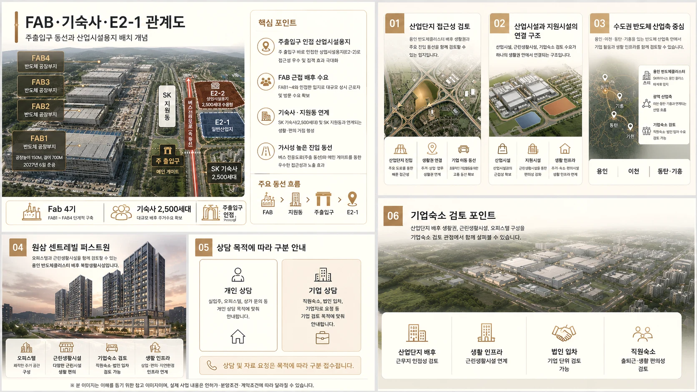

임직원 식음·편의시설 연계 가능성
오피스텔 체류 수요와 근린생활시설을 함께 검토해 일상 편의 접근성을 살펴봅니다.
사업계획서 기반 입지·상품·상가·호실타입 검토자료입니다. 사업개요, 입지, 산업단지 구조, 기업숙소 검토 자료는 아래 항목에서 확인할 수 있습니다.

위치, 규모, 용도, 주차계획 등 프로젝트 기본 정보를 확인합니다.
02 입지·수요 분석FAB, 기숙사, E2-1 관계와 접근성을 검토합니다.
03 건축·설계 자료조감도, 배치, 층별 구성 등 건축 관련 자료를 확인합니다.
04 기업 상담 및 자료 요청직원숙소, 법인 임차, 기업자료 요청을 접수합니다.
기업숙소와 임직원 체류 수요를 검토할 때는 숙소 자체뿐 아니라 식음·편의·업무지원 기능과의 연계성도 함께 확인할 필요가 있습니다.
오피스텔 체류 수요와 근린생활시설을 함께 검토해 일상 편의 접근성을 살펴봅니다.
산업단지 방문, 미팅, 현장 지원 업무에 필요한 지원 공간 활용 가능성을 검토합니다.
방문객, 현장 근무자, 장기 체류자의 기본 생활편의 수요를 참고자료 기준으로 확인합니다.
기업 운영 목적에 따라 법인 임차, 업무지원 거점, 직원복지용 공간 검토가 가능합니다.